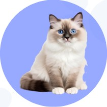

Ragdoll
Alimentação
Rações balanceadas específicas para gatos grandes e calmos. Alimentação úmida auxilia na hidratação.
Cuidados
Escovação frequente, prevenção de bolas de pelo e monitoramento de peso.
Habitat
Ambientes tranquilos e seguros, com espaço para descanso e brincadeiras.
Doenças Comuns
Cardiomiopatia hipertrófica, problemas urinários.
Alimentos Proibidos
Leite, ossos, cafeína, alimentos condimentados.
Alimentos Indicados
Ração premium, peito de frango, arroz, cenoura.
Manejo
Brinquedos interativos, vigilância com peso e visitas periódicas ao veterinário.